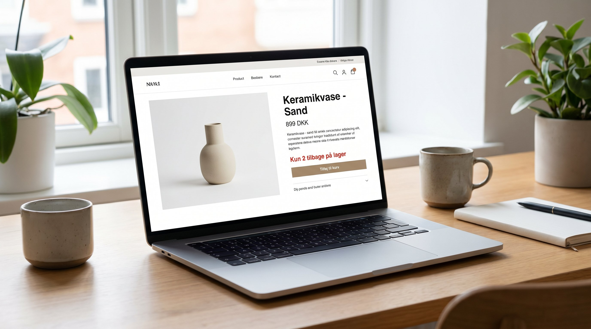

Lagerstatus paa din webshop er ikke bare et teknisk felt i dit system. Det er en aktiv kommunikation til dine kunder der paavirker konverteringsraten, generer urgency og saetter forventninger. Og naer det er forkert, koster det dig enten oversalg du ikke kan levere, eller tabt omsaetning paa varer du faktisk har paa hylden.
De fleste webshops opererer med en simpel tostand: paa lager / ikke paa lager. Det er suboptimalt. Der er mindst fire lagerstatuser der har strategisk vaerdi, og de skal bruges rigtigt for at give maksimal effekt.
👉 SmartPack synkroniserer lagerstatus til din webshop i realtid, saa det du viser altid matcher det du har. Laer mere
De fire lagerstatuser og hvornaar du bruger dem
| Status | Hvornaar | Effekt |
|---|---|---|
| Paa lager | Lagerbeholdning over threshold (fx 6+) | Normal konvertering |
| Faa tilbage (fx "Kun 3 tilbage") | Lagerbeholdning under threshold (1-5 stk.) | Urgency, typisk +10-20% konvertering |
| Udsolgt (med dato) | Lager = 0, restock-dato kendes | Reducerer bounce, muliggoer preorder |
| Udsolgt (uden dato) | Lager = 0, restock ukendt | Vis notifikations-mulighed |
Det kritiske element er threshold-indstillingen for "faa tilbage". For en webshop der saelger 2-3 stk. af en vare om dagen, er 5 stk. virkelig faa. For en vare der saelger 2 stk. om maaneden, er 5 stk. et par maaneders lager. Threshold skal matches til salgshastighed, ikke vaere et fastsat tal.
Urgency-effekten: "Kun 2 tilbage" virker
"Kun X tilbage paa lager" er et af de mest veldokumenterede konverteringsvaerktoejer i eCommerce. Det skaber scarcity-psykologi: kunden ved at de maa beslutte nu, ellers kan det vaere for sent. Effekten er typisk 10-20% hoejere konverteringsrate paa produktsider med lav-lager-badge sammenlignet med produktsider uden.
Men det kraever aerligehed. Falsk urgency (vise "Kun 3 tilbage" selvom der er 300 paa lager) er et tillidsbrud naer kunden gennesskuer det. Og danskere er skeptiske. Brug funktionen kun paa produkter der rent faktisk naermer sig tomt lager.
Realtids-synkronisering: hvorfor det er kritisk
Mange webshops opdaterer lagerstatus periodisk: een gang i timen, een gang om dagen, eller naer en medarbejer manuelt synkroniserer. Det er et problem af tre arsager:
- Oversalg. En vare der saelges paa webshop og paa et messestativ paa samme tid kan give en oversalgs-situation, naer webshoppen ikke ved at lageret er tomt. Resultatet er en ordre du ikke kan levere og en kunde der er skuffet.
- Tabt urgency. En vare der faktisk har "kun 2 tilbage" viser ikke det, fordi statusopdateringen ikke er sket endnu. Du mister konverteringspotentialet.
- Forkert "paa lager"-signal. En kunde der koeber en vare der faktisk er udsolgt, og saa faar en annullering 2 dage senere, er en kunde der maaskle aldrig koeber hos dig igen.
Realtids-synkronisering mellem dit WMS og din webshop loser alle tre problemer. Det er ikke et nice-to-have. Det er fundamentalt for en professionel webshop-operation.
Saadan sætter du det op i praksis
De fleste moderne eCommerce-platforme (Shopify, WooCommerce, Magento) understotter lager-synkronisering via API. SmartPack sender lagerstatus-opdateringer til din webshop i realtid via integration. Naer en ordre plukkes og bekraeftes paa lageret, opdateres webshoppen med det samme.
Konfigurationen er typisk:
- Saet et "faa tilbage"-threshold pr. produkt eller produktkategori baseret paa gennemsnitlig daglig salgshastighed.
- Definerer hvad der sker ved 0 paa lager: vis udsolgt, aktiver notifikations-formular, skjul i kategori-listing eller vist med restock-dato.
- Opsaet notifikationsmails der automatisk sendes til tilmeldte kunder naer varen er hjem paa lager igen.
Hvad du taber paa forkert lagerstatus
To scenarier og hvad de koster:
- For optimistisk lagerstatus (vis paa lager naer tom): Oversalg foerer til annulleringer. En annulleret ordre koster gennemsnitligt 80-150 kr. i kundeservice og administration. Og du mister tillid der er svaar at genopbygge.
- For pessimistisk lagerstatus (vis udsolgt naer der er varer): Du mister direkte omsaetning. Kunden der vil koebe men ser "udsolgt" gaar til konkurrenten. Og de vender ikke tilbage blot fordi din status aendres.
Begge scenarier er undgaaelig med praecis realtids-synkronisering.